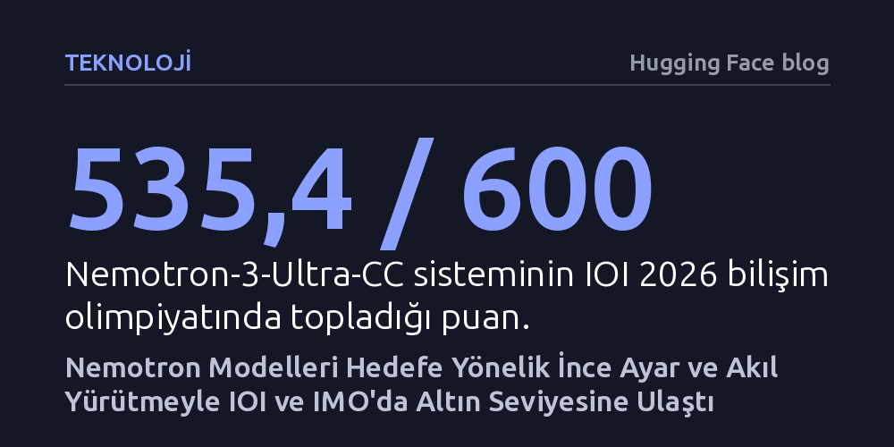

TEKNOLOJI · Hugging Face blog · 2026-10-08
NVIDIA, Nemotron 3 modellerini denetimli ince ayar, pekiştirmeli öğrenme ve test anı çıkarım döngüleriyle özelleştirerek hem IOI 2026 hem IMO 2026'da altın madalya seviyesine ulaştırdı. Sonuçlar, her uzmanlık için sıfırdan model kurmak yerine hedefe yönelik akıl yürütmeyle mevcut modelleri geliştirmenin yeterli olduğunu gösteriyor.
Yapay zekanın en zorlu zihinsel alanlarda başarılı olması için devasa yeni modeller kurmak gerekmediğini; doğru ince ayar ve çıkarım anı denetim döngülerinin dünya standartlarında uzmanlık yaratmaya yettiğini gösteriyor.

Uluslararası Bilişim Olimpiyatı (IOI) ve Uluslararası Matematik Olimpiyatı (IMO), insan muhakemesinin en zorlu iki zıt kutbunu sınar. Bilişim yarışması, katı zaman ve gönderim sınırları altında gizli test senaryolarını hatasız geçen algoritmalar ve kodlar talep ederken; matematik olimpiyatı biçimsel kalıplardan uzak, tamamen doğal dille örülmüş titiz ispatlar gerektirir. Bu iki yarışmanın tekinde bile başarılı olmak zorken, NVIDIA araştırmacıları Nemotron 3 temel model ailesini özelleştirerek hem IOI 2026 hem de IMO 2026 seviyesinde altın madalya derecesine ulaştıklarını açıkladı.
Elde edilen sonuçların geçerliliği yarışmaların gerçek koşullarıyla doğrudan test edildi. IOI 2026 denemesi; insan yarışmacılarla aynı süre, internet erişim yasağı ve gönderim kısıtlamaları altında canlı olarak yürütüldü ve 600 üzerinden 535,4 puan aldı. IMO 2026 sisteminin sunduğu doğal dil ispatları ise doğrudan resmi jüri üyeleri tarafından puanlandı; sistem altı sorunun dördünü eksiksiz çözüp 42 üzerinden 30 puan alarak resmi altın madalya eşiğini geride bıraktı. Üstelik bu matematiksel başarı, herhangi bir harici biçimsel doğrulayıcı veya hesaplama aracı olmaksızın, tamamen doğal dil akıl yürütmesiyle kazanıldı.
Araştırmacılar, bu başarının arkasındaki felsefeyi "kolay ince ayar" kavramını yeniden tanımlayarak açıklıyor. Yazarların ifadesiyle, "İnce ayara uygun olmak, eğitilebilir bir model kontrol noktasından fazlasını ifade etmelidir." Asıl amaç, her yeni problem sahası için sıfırdan trilyonlarca parametreli yeni bir temel model inşa etmek yerine, var olan yetkin bir modeli net ve tekrarlanabilir bir yöntemle dönüştürebilmektir.
Bu yöntem üç temel sacayağına dayanıyor: alana özgü problem havuzları ile kaliteli düşünce zincirleri derlemek, standart denetimli ince ayar (SFT) ile pekiştirmeli öğrenmeyi (RL) tatbik etmek ve uzman modeli çıkarım anında cevapları sınayan bir denetim döngüsüyle eşleştirmek. Rekabetçi programlama tarafında 22.000 problem ve sentetik akıl yürütme verisi derlendi. 30 milyar toplam (3 milyar aktif) parametreli küçük Nemotron Nano modeli hem SFT hem RL eğitimi alırken, 550 milyar toplam (55 milyar aktif) parametreli Ultra modelinde tek bir SFT dönemi bile önceki küçük modelin tüm eğitim kazanımlarını geride bırakmaya yetti. Bu durum, model ölçeği büyüdükçe uzmanlaşma sürecinin daha az adımla yüksek verime ulaştığını gösteriyor.
Olimpiyat başarısını getiren asıl kaldıraç, yalnızca model ağırlıklarını güncellemek değil; modeli test anında kendi kendini değerlendiren bir akıl yürütme döngüsüne dahil etmek oldu. IOI tarafında ham model 130 puan alırken, ince ayar ve pekiştirmeli öğrenmeyle 291 puana çıktı; altın madalya eşiği olan 438,3 puanı aşmasını sağlayan ise "GenCorrect" adı verilen yinelemeli düzeltme stratejisiydi. Model, ürettiği çözümleri test ortamında sınayıp hatalarından ders çıkararak çözümünü adım adım rafine etti ve 468 puana, büyük modelle ise 502 puana sıçradı.
Matematik olimpiyatında ise iki farklı uzman modelin birbirini tamamlaması sağlandı. 15 bini aşkın probleme ait 414 binden fazla örnekle eğitilen SFT modeli ispat oluşturma, boşlukları saptama ve eleştirilere yanıt verme kabiliyeti kazandı; zorluk sınırındaki problemlerle eğitilen RL modeli ise tekil çözüm kalitesinde zirveye ulaştı. Nihai sistemde modeller önce aday ispatlar üretti, bunları puanladı, mantık hatalarını eleştirdi ve en umut vadeden taslakları revize etti. Çok aşamalı bu çıkarım süzgeci sayesinde sistem, kaba kuvvetle rastgele binlerce cevap aramak yerine bilinçli ve metodik bir ispat geliştirme sürecini başarıyla taklit etti.
Elde edilen madalyalar tek başına ince ayarın mucizesi olmadığı gibi, sadece çıkarım anında devasa işlem gücü yakarak binlerce olasılık türetmenin de bir sonucu değil. Gerçek atılım; modelin, eğitim verisinin ve çıkarım anındaki akıl yürütme mekanizmasının birbiriyle uyumlu biçimde eş güdümlü tasarlanmasından doğuyor. Uzmanlaşmış bir model döngüye dahil edildiğinde, sisteme yalnızca daha iyi çözümler sunmakla kalmıyor; aynı zamanda çok daha keskin eleştirmenler ve daha tutarlı düzeltmeler sağlıyor.
NVIDIA'nın modelleri, eğitim tariflerini ve veri setlerini Hugging Face ve NeMo-Skills kütüphaneleri üzerinden açık kaynak olarak toplulukla paylaşması, bu metodolojinin kapalı kapılar ardında kalmayacağını kanıtlıyor. İnsan zekasının en uç noktalarında yer alan algoritmik düşünme ve soyut matematik ispatlarının, sıfırdan devasa modeller eğitmeden de erişilebilir uzmanlık reçeteleriyle çözülebileceğini görmek, yapay zekanın gelecekteki özelleşme rotasını kökten değiştirecektir.